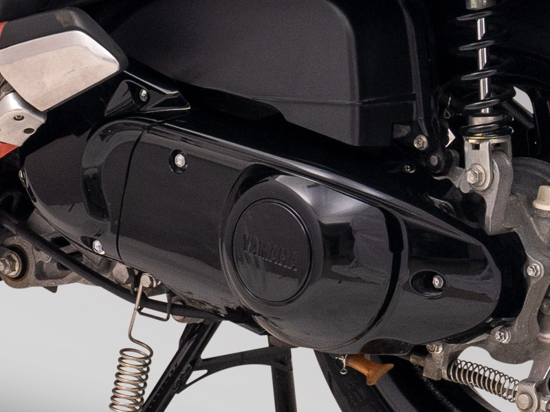

ระบบขับเคลื่อนด้วยสายพาน
หลักการทำงานระบบขับเคลื่อนด้วยสายพาน
รถมอเตอร์ไซค์ระบบส่งกำลังด้วยสายพาน
ระบบส่งกำลังด้วยสายพานเป็นที่นิยมในรถมอเตอร์ไซค์เกียร์ออโตเมติกทั้งรุ่นเล็กที่มีขายตามท้องตลาดทั่วไปและมอเตอร์ไซค์รุ่นใหญ่ๆ ใช้สายพานในการขับเคลื่อนและมีระบบเกียร์แบบอัตโนมัติ (Continuous Variable Transmission หรือ CVT) มีส่วนประกอบของระบบส่งกำลังที่สำคัญ ซึ่งมีอยู่ 3 จุดหลักๆ คือ สายพานรูปตัว V (V-Belt), ชุดพูลเลย์หน้า และชุดพูลเลย์หลัง
ข้อดี
ข้อดี รถมอเตอร์ไซค์ระบบส่งกำลังด้วยสายพานก็คือรถมอเตอร์ไซค์เกียร์ออโต้นั่นเอง ข้อดีคือไม่ต้องคอยเปลี่ยนเกียร์ อัตราเร่งดีกว่า ขับขี่ได้นุ่มกว่า เสียงเบากว่า ไม่ต้องคอยตั้งโซ่บ่อยๆ และมีที่ครอบช่วยป้องกันสิ่งแปลกปลอม หรือ สิ่งสกปรกต่างๆข้อดี รถมอเตอร์ไซค์ระบบส่งกำลังด้วยสายพานก็คือรถมอเตอร์ไซค์เกียร์ออโต้นั่นเอง ข้อดีคือไม่ต้องคอยเปลี่ยนเกียร์ อัตราเร่งดีกว่า ขับขี่ได้นุ่มกว่า เสียงเบากว่า ไม่ต้องคอยตั้งโซ่บ่อยๆ และมีที่ครอบช่วยป้องกันสิ่งแปลกปลอม หรือ สิ่งสกปรกต่างๆ
ข้อสังเกต
ข้อสังเกต สูญเสียกำลังขับเคลื่อนมากกว่ารถมอเตอร์ไซค์ระบบโซ่ มีค่าใช่จ่ายในการซ่อมบำรุงที่ค่อนข้างสูงการถอดเปลี่ยนอะไหล่มีความซับซ้อนมากกว่า ถ้าไม่มีความรู้หรือไม่ชำนาญ แนะนำให้ปรึกษาช่างที่มีประสบการณ์โดยตรงจะดีที่สุด